3 Months
5 Members
Design Lead
Competitive Analysis
User Personas
Wireframing
User Scenarios
Prototyping
Project objective
The transition from high school to college is not easy. Balancing a heavier workload while keeping up with exercise, friends, and work make it extremely overwhelming for many students. With all this stress, it is not surprising that students face mental health issues.
This problem inspired my team and I to create a solution to lift some of the responsibilities off students' shoulders, so they can focus on enjoying the college experience.
“How might we reduce the stresses of college life on Freshmen?”
Competitive analysis
To jump start my ideas, I looked at what other people have done to address student stress. I collaborated with my team to conduct research on scheduling, trackers, and to-do list products because organization leads to a simpler and stress-free lifestyle. I found three products, myHomework, Habit Tracker, and remember the milk.
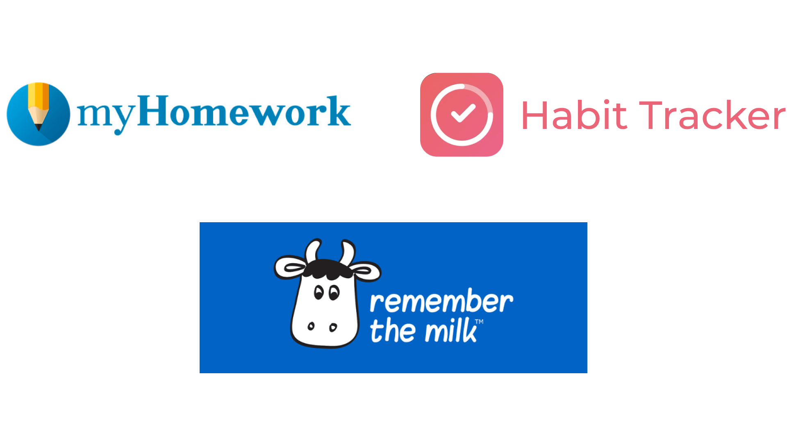
40 survey responses and 5 interviewees
Summarized results of University of Washington Freshmen
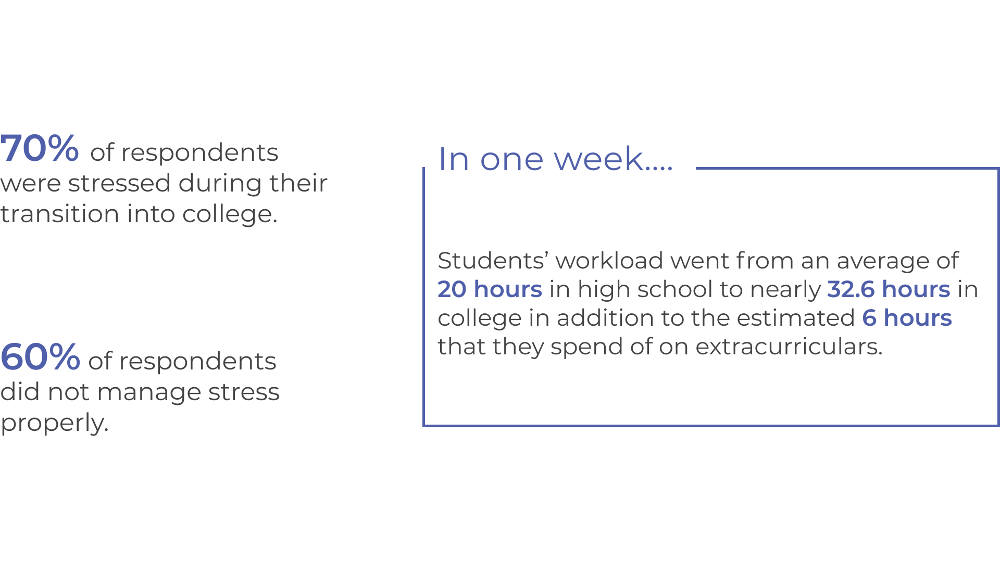With my team, I conducted a survey on Freshmen at our university (since it was convienient) and I was interested in the workload increase from the high school level to the university level. Participants were also asked about whether they felt stress during their transition to college and how they handled that stress. These questions matter to me because I needed confirmation that college life was much tougher than high school life. However, now that I have the statistics to back up our project objective, it was time to dive deeper to understand and empathize with individual students.
Student struggles & what would help
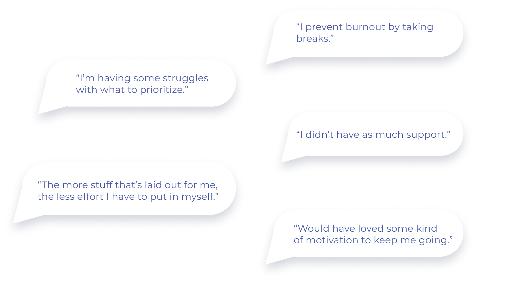User personas
I compiled all the user research into personas which I would later use for the user scenarios.
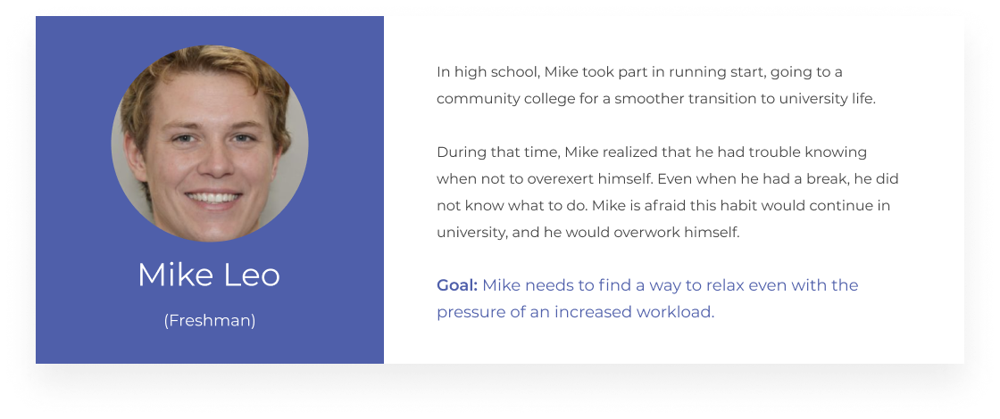 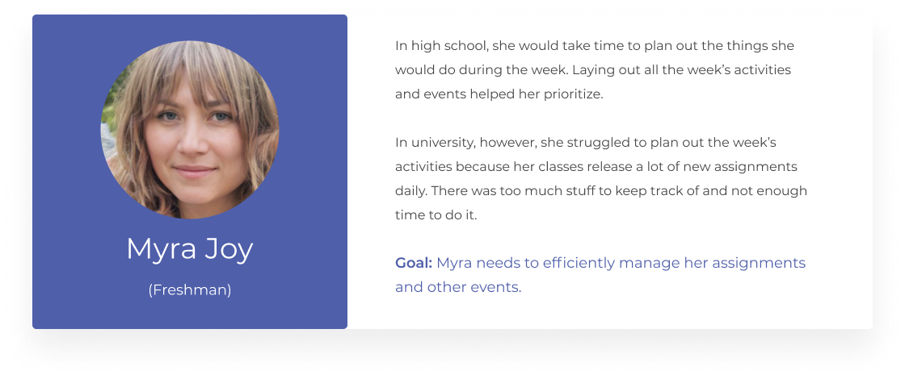My design goals
Using the market and user research, I created two design goals that would meet our stakeholders' needs.
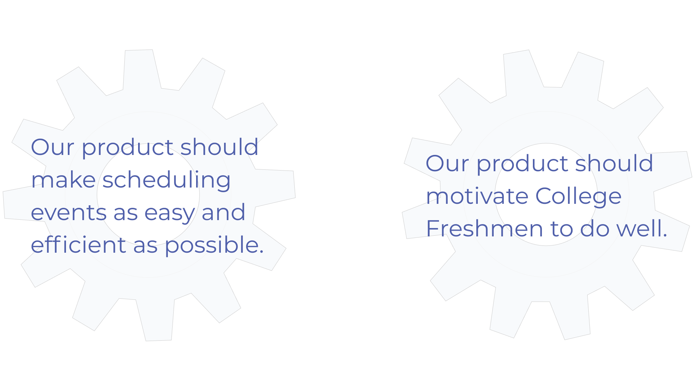I chose a mobile application
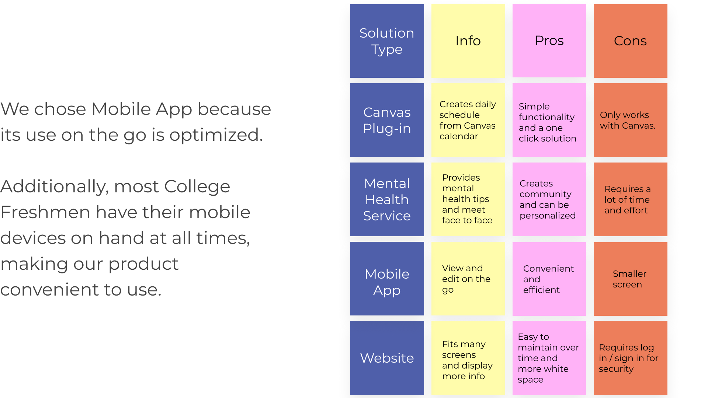Proposing features for the mobile app
Together with my team, I brainstormed product features that meet my two design goals. In the end, we settled on these six key features.
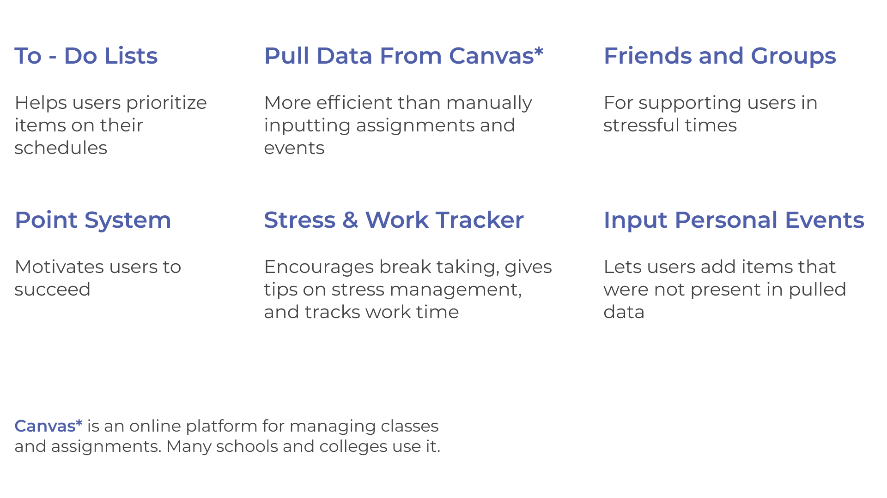Information architecture
Although I created a site map for the purpose of guiding our sketches, I ultimately went straight to the wireframing phase since I was short on time. The map was handy for organization because it told me what screens to create and where in the flow the screen belonged.
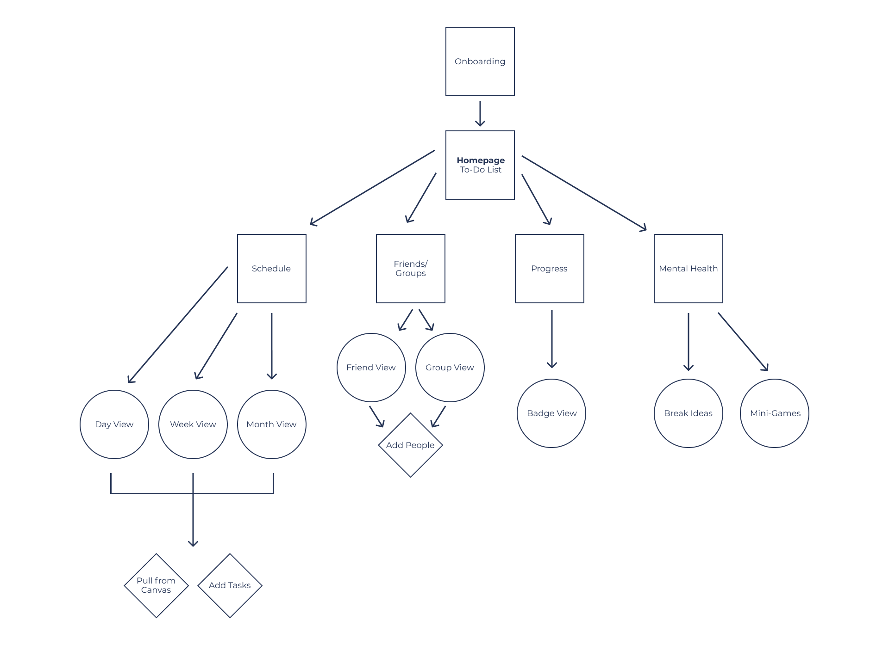Confusing wireframes
Unfortunately, me and my teammates rushed into wireframing and neglected to discuss some wireframing ground rules. This caused the wireframes to be inconsistent. Many of the screens had color. Other screens did not have color but were overcrowded with words in comparison to the rest. Some even had both color and detail!
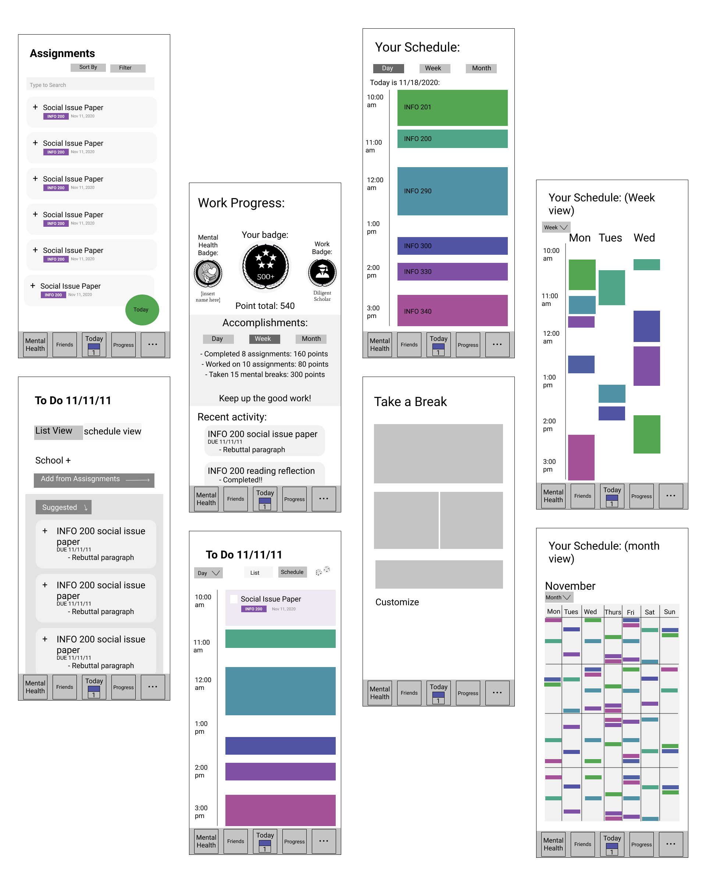While this may not seem like a problem, it became a disaster when I attempted to use it for the user scenarios. None of us could understand what we were doing because it was confusing to simulate the navigation from screen to screen.
My wireframe revisions
Me and my team didn't have enough time to go through and make all the screens workable. There was still a pretty lengthy write-up for us to complete (since this was a class that required a thorough explaination of every decision). So, I suggested I would spend a couple hours fixing the wireframes while the rest of the team gets started on the write-up. That way, we wouldn't miss a deadline.
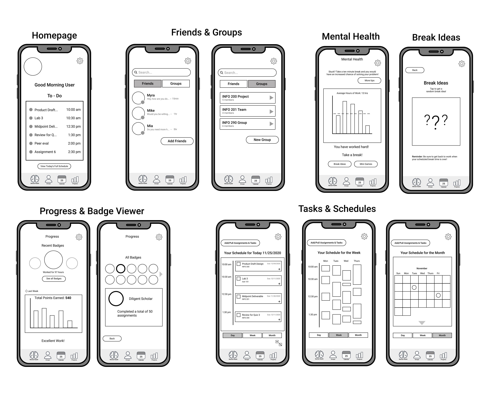Throughout my couple hours of redesigning, I was in constant contact with my team, to ensure that we were all on the same page. For consistency, I made the screens black and white, and used consistent button and outline styling. Since I wanted to reuse the wireframe's elements in the prototype, I thought ahead as I redesigned each screen. I decided to put the screens within phone mock-ups to make sure that the elements wouldn't be too close to the sides of the actual prototype.
User scenarios
I simulated our personas' behavior using the wireframe. By doing this, I was able to visualize what worked and what areas of the product need to be improved upon. I would have loved to create more personas, which would have let me do more user scenarios to test the other features of the product. Unfortunately, I had limited time.
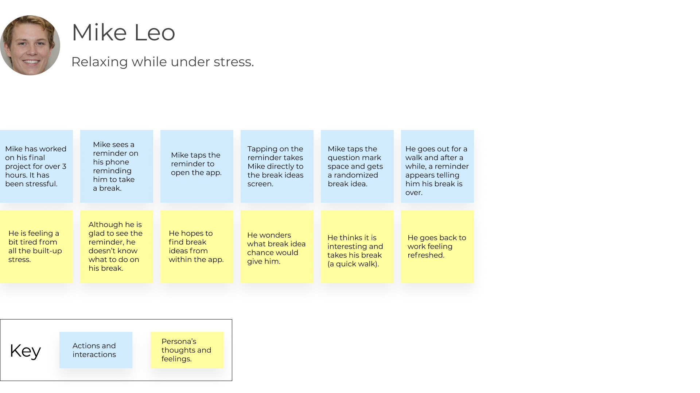The persona of Mike had the goal of relaxing while under stress. The product would send Mike a notification and if he didn't have any break ideas, he would tap the notification and the break ideas page would be pulled up. Randomizing the break idea would add the element of surprise and suspense, which is greatly appreciated in times of stress.
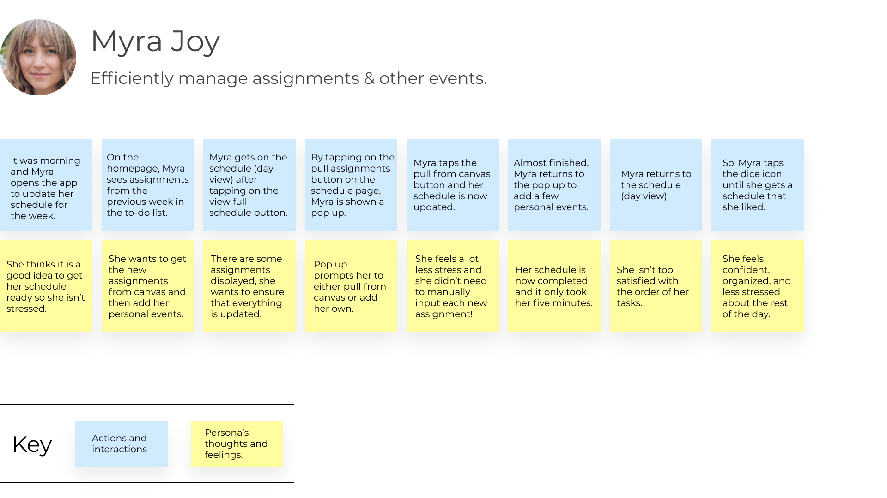The persona of Myra had the goal of managing assignments and events efficiently. She would use the pull from canvas feature so she would be spared the task of manually inputting assignments. After she adds her other events, she would use the randomize tasks feature. This feature uses user input data to assign tasks at random to create a workable schedule for the day.
Taking responsibility of the prototype
When we started the prototyping phase, everyone was pretty concerned about the upcoming project deadline. My teammates suggested I take charge of the prototyping while they worked on the final write-up.
Onboarding
The onboarding screens of the product are important because I needed to get essential information from the user such as their school, classes, and habits. These screens will only appear if the user is new to the product. As such, it was important to develop a good first impression of encouragment and confidence. Users can change their answers to these prompts in the settings later on.
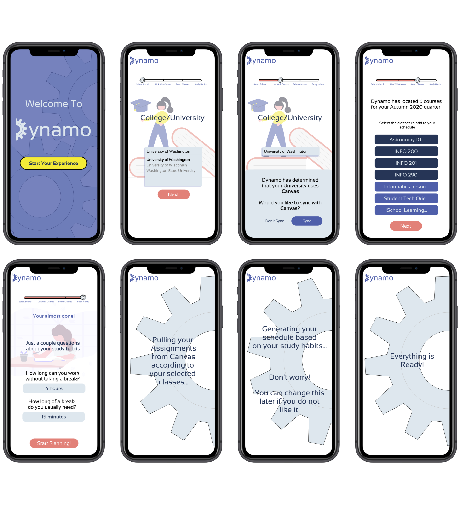Scheduling
All views of the user's schedule mostly stayed the same from the wireframe. Users can randomize their schedule for the day by interacting with the dice icon. This is a provided feature because students may not like their initial randomized schedule. I also flushed out the add/pull assignments button interaction by creating another screen. In this new screen, users can add personal events and pull assignments from canvas.
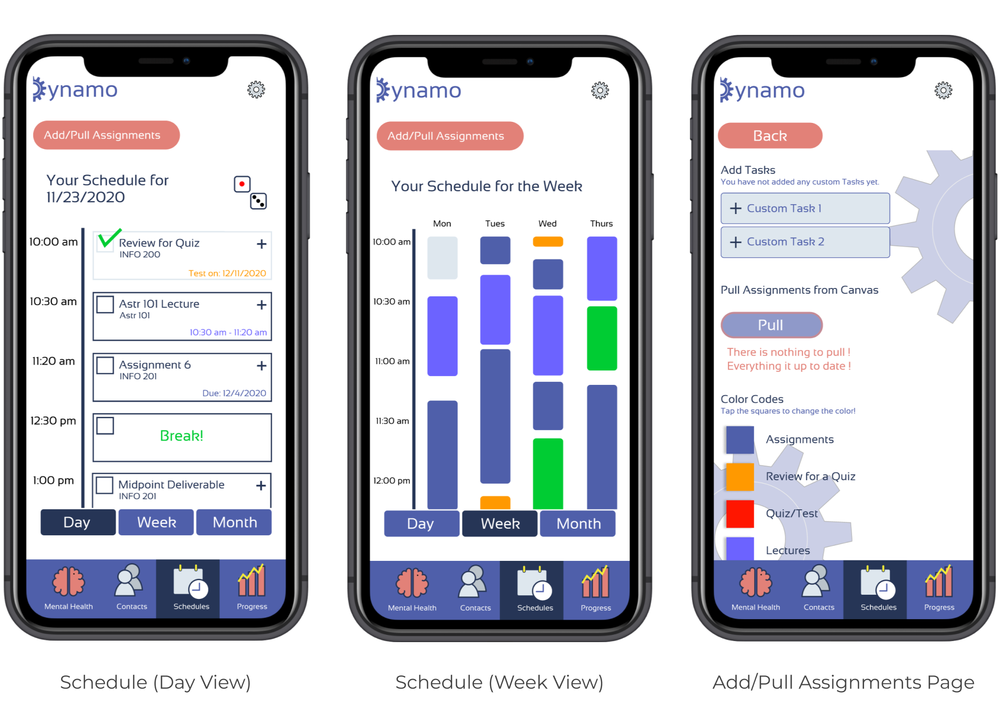Mental health and motivation
Another important feature of my product was having the ability to keep track of a user's hours of work and be able to give break ideas. Additionally, I also implemented a minor points system where users can earn badges. This is a way for students to feel more motivated.
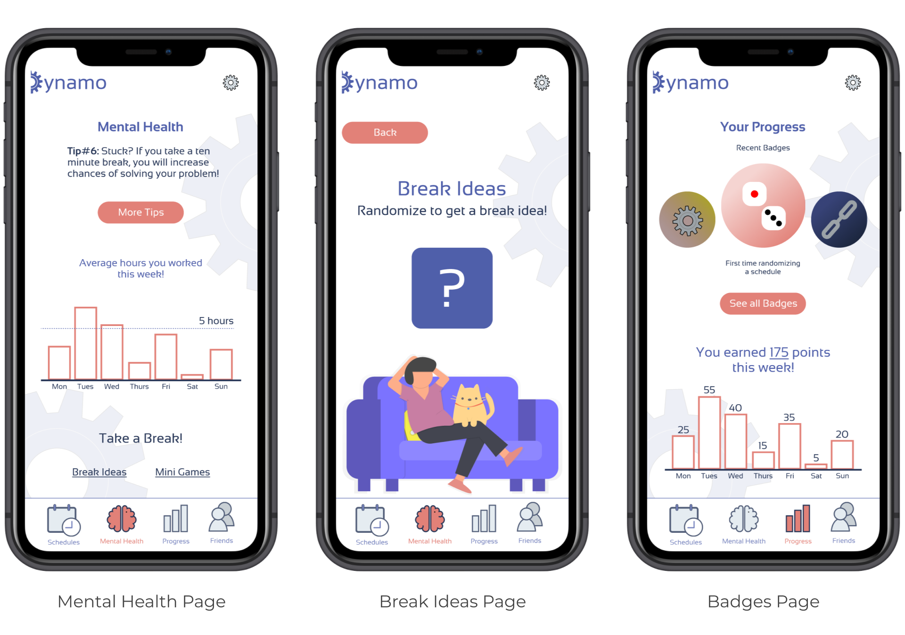User feedback
Although the course didn't allow time for detailed usability testing, I did recieve feedback from my peers. Additionally, my project also won the class popularity award.
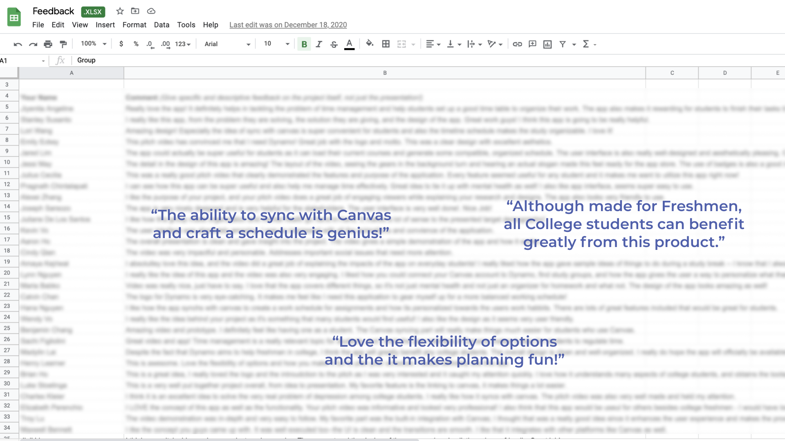Addressing a concern
How would the application create a workable schedule?
Along with all the feedback, there was a common concern about the product. That being the randomization feature. Since tasks don't take the same time to complete, how would the application produce a workable schedule? What user input information would be necessary to make it work?
As mentioned in the Myra persona and the prototype screens that deal with scheduling, students can randomize their tasks for the day by interacting with the dice icon.

The concern is addressed by flushing out the product more
This concern can be addressed if I had flushed out the product's user information inputs more. However, given the time constraints, I didn't dive deep into the topic. Although the project had ended by the time I had gotten the feedback, I took it upon myself to address this concern.
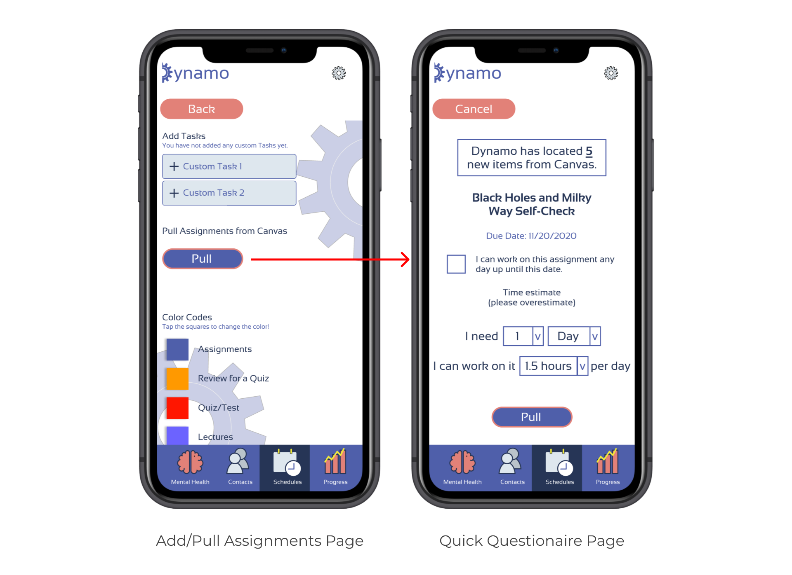Added a questionaire screen
My proposed solution was to implement a brief questionaire after the user hits the pull button to provide specific assignment details that the application would need to create a workable schedule. Details included whether the student could work on an assignment on any day up to the due date and the amount of time they would need to complete the assignment. Students are encouraged to give an overestimate of the time because it would prevent the product from creating schedules that make the student rushed.
The takeaway
The "lone wolf" approach is not the UX Designer way
When my teammates gave me task of prototyping the entire application, I jumped at the chance. What I neglected to understand was that the UX process is wired to be highly collaborative. This explains why my application had some flaws in its design (many would have been resolved by usability testing which the course did not allow time for). Going forward, I shall ensure the collaboration of all my teammates during the design process.
What's next?
Me and my teammates were thinking of using this course project for our senior capstone project because of the positive feedback and a need for efficient schedule creation. I would first conduct usability testing using the prototype, improve upon it, and make the concept idea into a reality.